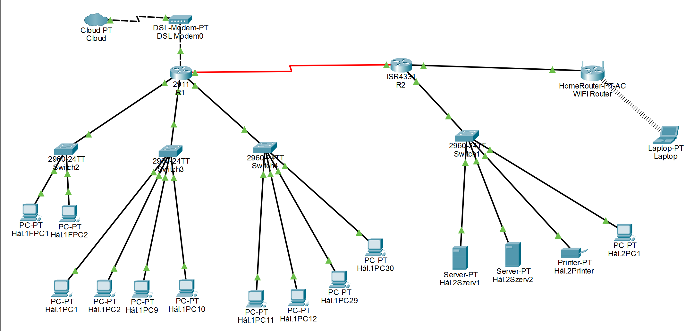
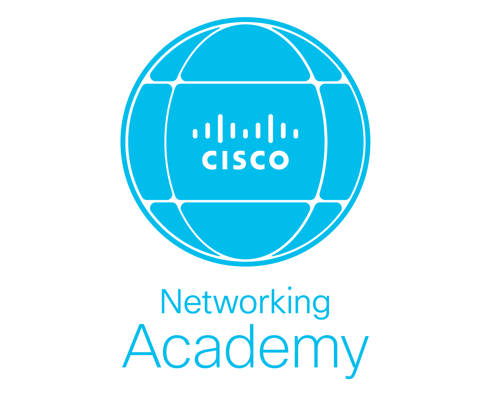

A hálózatkezelést a Cisco Networking Academy (NetAcad) anyagaiból tanultam meg. Ez sokat segített abban, hogy ne csak az elméletet lássam, hanem azt is, hogyan működnek a hálózatok a valóságban. Megértettem, hogyan épülnek fel a hálózatok az OSI és a TCP/IP modellek alapján, és megtanultam, hogyan kell logikusan összekapcsolni az olyan eszközöket, mint a routerek, a switchek vagy a végponti számítógépek.
A gyakorlatban leginkább a Cisco Packet Tracert használtam. Ebben a szimulációs programban saját hálózatokat terveztem és építettem fel virtuálisan. Itt nemcsak az eszközök beállítását gyakoroltam, hanem azt is, hogyan kell megkeresni és kijavítani a hibákat, ha valahol megszakad a kapcsolat a hálózatban.

A 12.-es projektben egy közlekedési lámpákat gyártó cég informatikusaként kaptam azt a feladatot, hogy tervezzem meg az új adminisztrációs irodájuk teljes hálózatát. Úgy kellett kialakítanom a rendszert, hogy 12 munkaállomás köztük a vezetői gép és 11 adminisztratív dolgozó munkahelye, valamint 2 hálózati nyomtató stabilan és gyorsan tudjon dolgozni.
A hálózatot Cisco Packet Tracerben építettem fel. Az irodát három szobára és egy külön központi szerverszobára (MDF) osztottam fel, ahol minden helyiségnek saját switch jutott. Beállítottam egy központi routert, négy switchet és egy szervert, amik kiszolgálják az egész irodát. Telepítettem egy vezeték nélküli HomeRoutert is, hogy laptopokkal is lehessen csatlakozni a hálózathoz. Minden eszközhöz egyedi IPv4-es címet rendeltem. Figyeltem az alhálózati maszkokra és az átjárókra, hogy a kommunikáció zavartalan legyen a szobák között.
Nagyon hasznos volt ez a projekt, mert végre megtapasztalhattam, hogyan lesz egy valós irodai igényből egy ténylegesen működő hálózati terv.
A 13.-os projektben egy osztálytársammal közösen a „Csinszka Csomag” nevű futárszolgálat teljes informatikai hálózatát terveztük meg és konfiguráltuk be. A feladatunk egy két telephelyes (Budapest és Gyöngyös) rendszer kialakítása volt, ahol a két város közötti adatforgalmat és a helyi igényeket is ki kellett szolgálnunk.
A telephelyek összekötésénél, Budapest és Gyöngyös között egy soros (Serial) vonalon keresztül hoztunk létre kapcsolatot. A két router között statikus útválasztást állítottunk be, hogy a csomagok pontosan célba érjenek a két város között. A budapesti központban ez a telephely a nagyobb, itt 32 darab PC-t és 3 switchet helyeztünk el. A hálózatot több alhálózatra bontottuk, és DHCP pool-okat hoztunk létre, hogy az eszközök automatikusan kapjanak IP-címet. A gyöngyösi telephelynél pedig a szervereké és a mobilitásé volt a főszerep. Beüzemeltünk két szervert és egy routert, amely WIFI hozzáférést biztosít a laptopok és 15 további kliens számára. Összetett IP-címzésnél különböző maszkokat ( /24, /27, /28, /29, /30) használtunk, hogy a lehető leggazdaságosabban osszuk ki a címeket, elkerülve a pazarlást.
Ez a projekt sokat tanított arról, hogyan kell skálázni egy hálózatot, és milyen kihívásokkal jár két távoli telephely biztonságos és stabil összekapcsolása.
A hálózatkezelés tantárgy keretében Cisco Networking Academy (NetAcad) tananyagára építve sajátítottam el a modern hálózatok alapjait. Az elméleti tudást, mint az OSI és TCP/IP modellek rétegeit, két nagy projekten keresztül alkalmazhattam a gyakorlatban, ami segített megérteni a hálózati eszközök közötti logikai kapcsolatokat.
A két év alatt megtett út során a kezdeti bizonytalanságot felváltotta a magabiztos eszközhasználat. Megtanultam, hogyan kell egy valós üzleti igényt technikai tervvé alakítani, legyen szó egy kisebb irodáról vagy egy többvárosos hálózati infrastruktúráról.
